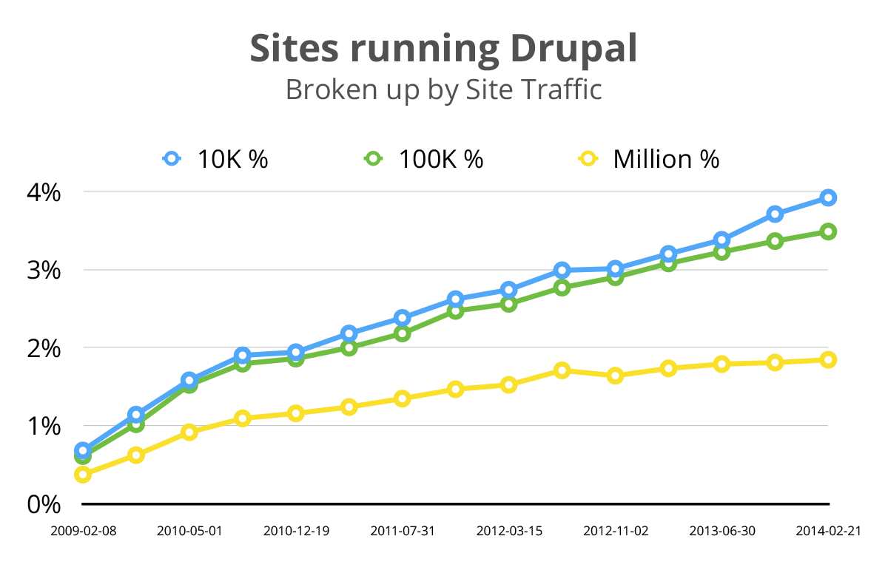

Backdrop CMS
for small-medium sized business & non-profits


A fork of Drupal
Different tools for different jobs


Backdrop Co-Founders
Jen Lampton
Backdrop Project Lead
@jenlampton
Nate Haug
Backdrop Technical Lead
@quicksketch
Created by
Drupal Developers
- Habitat for Humanity
- The Grammys
- Oxfam International
- Harvard
- Bay Area Rapid Transit
- Tesla Motors
Created by
Drupal Trainers
- Taught over 1,500 students
- Featured in online training videos
- Created materials for in-person training classes
- Nate: Lullabot trainer since 2005
- Jen: Director of training at Chapter Three, 2010-2012
- Nate: Co-author of the first O'Reilly book "Using Drupal"
Created by
Drupal Core Developers
Nate
- AJAX Framework & drag-and-drop
systems in Drupal 6 - File & Image modules
in Drupal 7 - Dialog system & CKEditor
in Drupal 8
Jen
- First core patch included
in Drupal 7.14 - Drupal core usability team
member, D7 & D8 - Twig initiative lead
Drupal 8 (2011 - 2013)
Created by
Drupal Community Advocates
- Spoken @ 125+ Drupal events
- Jen: Organizing Committee, DrupalCon SF 2010
- Jen: Lead Organizer, Bay Area Drupal Camp
Why Fork Drupal?


Direction
Drupal 8
Drupal for the Enterprize
Drupal 8 beta is the latest, greatest release of the world's most widely used enterprise web CMS.
Marketshare
Drupal Direction: Code
- Much larger codebase (3x more Drupal code by bytes)
- More dependencies (external libraries)
- Most code rewritten to be Object Oriented
- Symfony based HTTP Kernel
Drupal Direction: Cost
- Drupal is free! But...
- Specialized (expensive) developers
- Specialized (expensive) hosting
- Ongoing maintenance costs
- Migration from version to version (not upgrades)
Decrease the complexity.
Lower the learning curve.
Shorten the time it takes to complete tasks.
Lessen the server resources required.
Decrease the cost.
Decision Making
Do-ocracy
Drupal Decision Making Process
Drupal is a do-ocracy, [...] things happen [...] because people are willing to do them.
- Andrea "zendoodles" Zoper
http://blog.nerdery.com/2013/02/do-ocracy-and-the-drupal-contrib-ecosystem
For example...
Twig
Rich-Text
Organic Growth!
The most motivated people can create change.
A Project Management Committee (PMC)
guides Backdrop's Decision Making Process

Current PMC members:

Nate Haug
core committer constituent

Jen Lampton
UX priority constituent
 Mike McCaffrey back-end constituent
Mike McCaffrey back-end constituent Wes Ruvalcaba front-end constituent
Wes Ruvalcaba front-end constituent Jack Aponte business-focus constituent
Jack Aponte business-focus constituent Gregory Netsas site-builder constituent
Gregory Netsas site-builder constituent...and growing!
The PMC's Responsibilities
- Handles conflict resolution.
- Sets the overall direction of the project.
- Ensures that each change follows the project's philosophy.
- Can change the project philosophy if necessary.
In order to guide the project, the project philosophy must be defined.
Backdrop Principles
- Backwards compatibility is important
- Write code for the majority
- Include features for the majority
- Ensure Backdrop can be extended
- Meet low system requirements
- Plan and schedule releases
- Always remain Free & Open Source
Backdrop Mission
Backdrop CMS enables people to build highly customized websites, affordably, through collaboration and open source software.
Backdrop Mission
Backdrop CMS enables people to build highly customized websites, affordably, through collaboration and open source software.
How to make web development affordable
- Increase the out-of-box functionality.
- Make maintenance easier.
- Always provide an upgrade path.
- Simplify the architecture.
- Consider the cost of each change
(value backwards compatibility)- Make it easy on existing developers.
- Make it fast to port modules between versions.
- More!
When can I use Backdrop CMS?
NOW
Release Schedule
Backdrop 1.0 released January 15, 2015
Backdrop 1.1 released May 15, 2015
Backdrop 1.2 released Sept 15, 2015
Backdrop 1.3 released January 15, 2016
Backdrop 1.4 released May 15, 2016
Backdrop 1.5 scheduled Sept 15, 2016
But what about contrib?
Status of top Drupal modules
- Ctools
- Views
- Token
- Pathauto
- Libraries API
- Entity API
- Admin Menu
- Webform
- Jquery Update
- Date
- IMCE
- CKeditor
- Google Analytics
- Wysiwyg
- Link
- Module Filter
- Metatag
- Backup & Migrate
- Rules
- XML Sitemap
- Features
- Views Slideshow
- Colorbox
- Media
- Entity Reference
- Transliteration
- CAPTCHA
- Field Group
- Views Bulk Operations
- Panels
- In core
- Ported
- Underway
Total modules & themes & layouts
- New (or ported) modules, themes, or layouts: 307
https://github.com/backdrop-contrib - Projects with official releases: 214
https://backdropcms.org/modules
But what about the community?
Community growth
- Backdrop Contrib group members: 55
- Core contributors: ~75
- Companies on backdropcms.org: 26
- Members on backdropcms.org: 338
Can I see it in action?
Demo Time!
Get involved
Google Hangouts every Thursday 4pm ET
mini-sprints every Thursday after the meeting
backdropcms.org
github.com/backdrop/backdrop
gitter.im/backdrop/backdrop-issues
@backdropcms
Questions?
backdropcms.org
github.com/backdrop/backdrop
gitter.im/backdrop/backdrop-issues
@backdropcms
Backdrop CMS
for small-medium sized business
& non-profits
Image Credits
SquareSpace: http://commons.wikimedia.org/wiki/File:Squarespace_Logo.png
Wordpress: https://wordpress.org/about/logos
Backdrop: https://backdropcms.org/about/logo
Drupal: https://www.drupal.org/node/9068
USS Enterprise: http://thescifichristian.com/2013/09/tng-theology-remember-me
Raised hands: http://frenchspin.com/en/site/everything/articles
Twig logo: http://twig.sensiolabs.org/
CKEditor logo: https://en.wikipedia.org/wiki/CKEditor